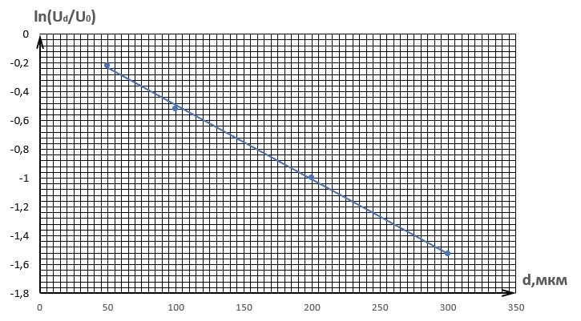
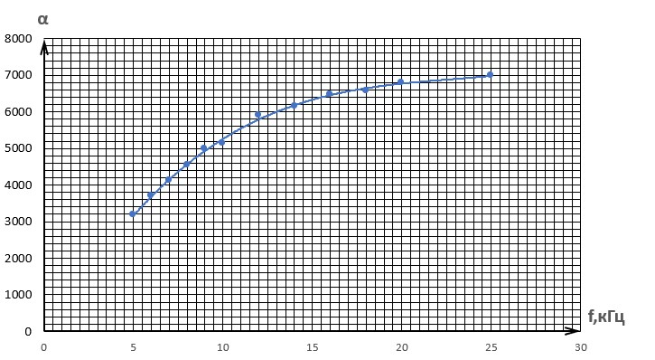
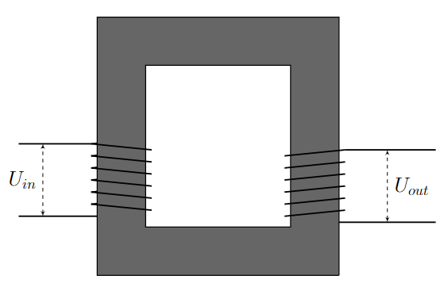
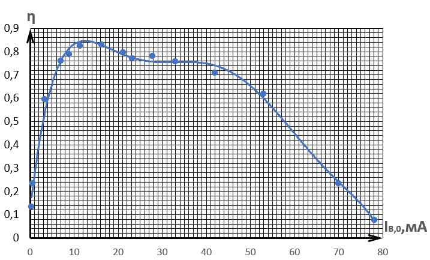
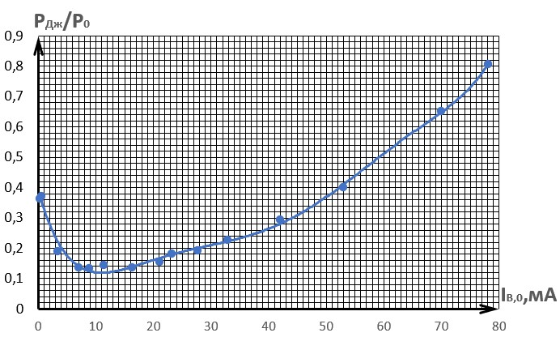
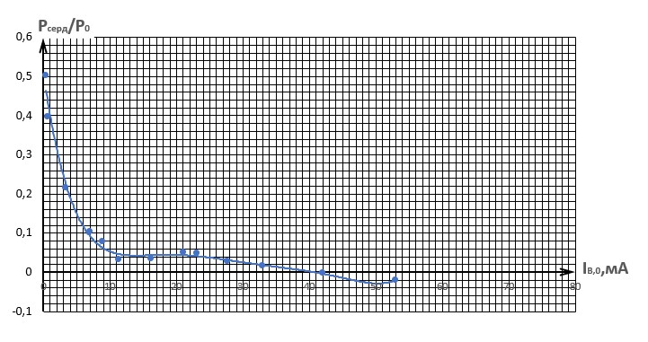
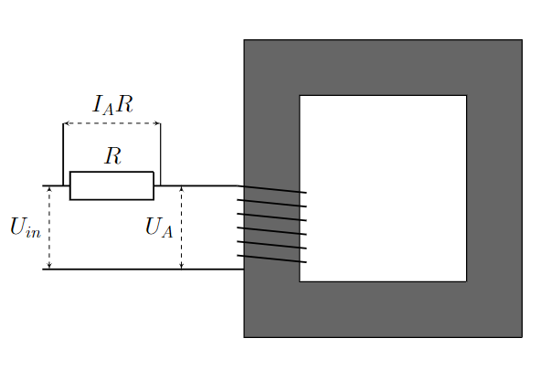
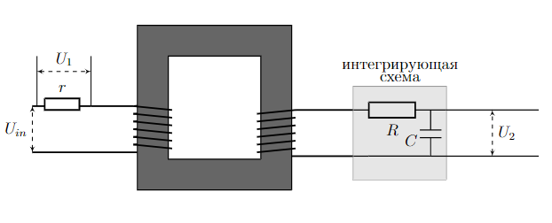
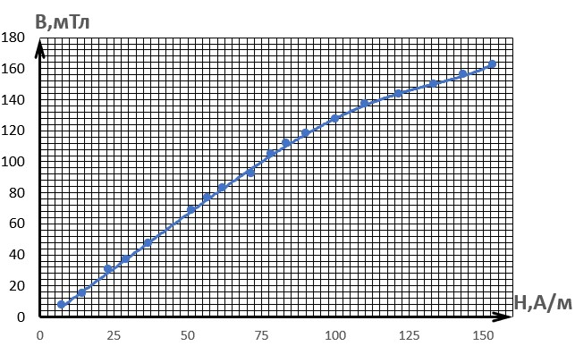
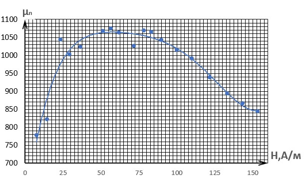

Ferrite core and transformer --- Solution
X24 (2024) — English translation
A0Measure the resistance of coils A and B ($r_A$ and $r_B$ respectively), as well as the resistance of the resistors connected in series with them. All values must be in the range up to $15~\mathrm{\Omega}$.??
Using a multimeter in ohmmeter mode, we measure the resistance of the coils and make sure they are working.
Answer: $$r_A=(13.3\pm0.1)~\mathrm{\Omega}$$ $$r_B=(9.0\pm0.1)~\mathrm{\Omega}$$ $$r_{A,res}=r_{B,res}=(0.97\pm0.04)~\mathrm{\Omega}$$
А1Carry out measurements to verify the above model of magnetic field shielding at frequency $f=10~\mathrm{kHz}$. Plot a linearized graph and find the damping coefficient $\alpha$ for the given frequency. The foil must be placed between coil A and the sensor coil.0.60
From Faraday’s law of electromagnetic induction it follows that the induced emf $$\mathcal{E}_{ind}(t)=-N\dfrac{d\Phi(t)}{dt}=-NS\dfrac{dB}{dt}$$ Neglect ohmic resistance coil, obtain, that voltage on coil $$U(t)=-\mathcal{E}_{ind}(t)=NS\dfrac{dB}{dt}$$ Consequently, amplitude voltage on coil and индукции magnetic field relate as $$U_{ampl}=2\pi{}f_0{}NSB_{ampl}\implies{}U_{ampl}\sim{}B_{ampl}$$ Let $U_0$ – amplitude voltage on coil sensor in отсутствии foil, $U_d$ – amplitude voltage on coil sensor for layer foil thickness $d~μm$. $B_ 0$ and $B_d$ determinable similarly. Then $$\dfrac{B_d}{B_0}=\dfrac{U_d}{U_0}\implies-\alpha{}d=\ln\dfrac{B_d}{B_0}=\ln\dfrac{U_d}{U_0}$$ It can be seen, that $\ln\dfrac{U_d}{U_0}(d)$ – linear dependence The table of measured and calculated values is presented below.
Neglecting the ohmic resistance of the coil, we obtain that the voltage across the coil is $$U(t)=-\mathcal{E}_{ind}(t)=NS\dfrac{dB}{dt}$$
Consequently, the amplitudes of the voltage on the coil and the magnetic field induction are related as $$U_{ampl}=2\pi{}f_0{}NSB_{ampl}\implies{}U_{ampl}\sim{}B_{ampl}$$
Let $U_0$ be the voltage amplitude on the sensor coil in the absence of foil, $U_d$ be the voltage amplitude on the sensor coil with a foil layer of thickness $d~\mathrm{\mu m}$. $B_0$ and $B_d$ are defined similarly. Then $$\dfrac{B_d}{B_0}=\dfrac{U_d}{U_0}\implies-\alpha{}d=\ln\dfrac{B_d}{B_0}=\ln\dfrac{U_d}{U_0}$$ It can be seen, that $\ln\dfrac{U_d}{U_0}(d)$ is a linear dependence
A table of measured and calculated values is presented below.
$d,~\mathrm{\mu m}$ $U_d,~$in $\ln\dfrac{U_d}{U_0}$ 0 2.12 0 50 1.70 -0.22 100 1.26 -0.52 200 0.78 -1.00 300 0.46 -1.53
Let's plot the linear dependence $\ln\dfrac{U_d}{U_0}(d)$ and determine $\alpha$ from the slope angle coefficient.
Answer: $\alpha=5160~\mathrm{m}^{-1}$

A2Determine the attenuation coefficient $\alpha$ for several frequencies in the range $5-25~\mathrm{kHz}$.2.00
Let's repeat the measurements from the previous point for other frequencies. The measurements and their corresponding $\alpha$ are presented in the table below.
$f,~\mathrm{kHz}$ $U_0,~\mathrm{V}$ $U_{50},~\mathrm{V}$ $U_{100},~\mathrm{V}$ $U_{200},~\mathrm{V}$ $U_{300},~\mathrm{V}$ $\alpha,~10^3 m^{-1}$ 5.00 2.10 1.88 1.62 1.17 0.74 3170 6.00 2.10 1.84 1.55 1.06 0.65 3690 7.00 2.12 1.82 1.48 0.98 0.58 4130 8.00 2.12 1.78 1.41 0.90 0.53 4540 9.00 2.12 1.74 1.34 0.82 0.50 5000 10.00 2.12 1.70 1.26 0.78 0.46 5140 12.00 2.12 1.62 1.14 0.66 0.40 5910 14.00 2.21 1.54 1.03 0.60 0.34 6160 16.00 2.15 1.46 0.94 0.54 0.31 6480 18.00 2.31 1.38 0.86 0.50 0.30 6580 20.00 2.18 1.31 0.82 0.46 0.27 6810 25.00 2.58 1.04 0.70 0.40 0.25 6980
А3Plot a graph of $\alpha$ versus frequency.1.20

B1Determine $m$ experimentally. Draw the measurement diagrams necessary to obtain the numerical value of this quantity.0.30
Let's assemble the circuit shown in the figure and measure $U_{in}$ and $U_{out}$ using an oscilloscope. $U_{in,0}=(6,10\pm0.05)~\mathrm{V}.$ $U_{out,0}=(3.48\pm0.04)~\mathrm{V}.$ We get the value $m=\dfrac{U_{out,0}}{U_{in,0}}:$
Answer: $m=0.57\pm0.01.$

B2Remove the dependence of $P_{full}$ and $P_0$ on the current amplitude in the secondary coil $I_{B,0}$.1.30
Let's introduce the following notations: $U_1$ and $I_1$ are the amplitudes of voltage and current in the primary coil, respectively, $\varphi$ is the phase difference between the voltage and current in the primary coil, $U_2$ is the amplitude of the voltage on the rheostat, $I_2$ is the amplitude of the current through it ($I_2=I_{B,0}$). Then $P_0=\dfrac{U_1I_1cos\varphi}{2}$, $P_{full}=\dfrac{U_2I_2}{2}=\dfrac{U^2_2}{2R}$ $U_1$, $U_2$, $\varphi$ are measured directly using an oscilloscope. $I_1=\dfrac{U_r}{r}$, where $r=10~\mathrm{\Omega}$ is the resistance connected in series with the primary coil, $U_r$ is the voltage amplitude across it. $I_{B,0}$ changes when the rheostat knob is turned. The measurement and calculated values are shown in the table below.
$U_1,~\mathrm{V}$ $I_1,~$mA $\cos\varphi$ $P_0,~$mW $R,~$Ohm $U_2,~$V $I_{B,0},~$mA $P_{full},~$mW $\eta$ 3.36 59.0 0.85 84.1 2.1 0.16 78.1 6.4 0.08 3.60 54.5 0.88 86.6 8.3 0.58 70.0 20.3 0.23 4.20 39.2 0.92 75.8 33.5 1.77 52.9 46.9 0.62 4.60 31.8 0.91 66.9 53.8 2.26 42.0 47.4 0.71 4.92 26.2 0.88 56.9 79.3 2.62 33.0 43.1 0.76 5.10 23.0 0.86 50.3 102 2.83 27.8 39.3 0.78 5.20 21.8 0.77 43.3 125 2.89 23.2 33.4 0.77 5.30 19.4 0.80 41.1 146 3.09 21.2 32.7 0.80 5.45 16.6 0.71 32.0 200 3.26 16.3 26.5 0.83 5.60 15.6 0.55 23.8 303 3.45 11.4 19.6 0.82 5.70 14.0 0.50 20.0 399 3.55 8.9 15.7 0.79 5.70 13.2 0.44 16.5 506 3.56 7.0 12.5 0.76 5.85 12.8 0.28 10.3 1080 3.65 3.4 6.2 0.60 5.90 13.0 0.14 5.3 5810 3.81 0.7 1.2 0.23 5.90 12.8 0.14 5.2 10500 3.85 0.4 0.7 0.13
B3Plot the dependence $\eta(I_{B,0})$. Indicate the maximum efficiency $\eta_{max}$ and at what $I^{max}_{B,0}$ it is achieved.1.20
From the graph we find $\eta_{max}$ and $I^{max}_{B,0}:$
Answer: $\eta_{max}=0.83\pm0.01.$ $I^{max}_{B,0}=(15\pm5)~\mathrm{mA}.$

B4Obtain the dependences of the relative contribution of each loss source $\dfrac{P_{J}}{P_0}$ and $\dfrac{P_{core}}{P_0}$ on the current amplitude in the secondary coil $I_{B,0}$. Graph them.2.00
Joule losses consist of the power dissipated directly on the coils due to the presence of ohmic resistance, and the power dissipated by a resistor connected in series with the primary coil. Knowing the currents in both coils, their resistances and the value of the resistor $r$, we can calculate the Joule losses $P_{J}$, and the losses in the core $P_{core}$ will be found as the remainder of the “expansion” equation $P_0$ in the condition. $$P_{J}=I^2_1(r_A+r)+I^2_2r_B,$$$$P_{core}=P_0-P_{full}-P_{J}.$$
$I_{B,0},~$mA $P_{J},~$mW $P_{core},~$mW $\dfrac{P_{J}}{P_0}$ $\dfrac{P_{core}}{P_0}$ 78.1 67.7 10.0 0.81 0.12 70.0 56.4 9.9 0.65 0.11 52.9 30.4 0 0.40 0 42.0 19.6 0 0.29 0 33.0 12.8 1.0 0.23 0.02 27.8 9.6 1.4 0.19 0.03 23.2 7.9 2.1 0.18 0.05 21.2 6.4 2.0 0.16 0.05 16.3 4.4 1.1 0.14 0.03 11.4 3.4 0.8 0.14 0.03 8.9 2.6 1.6 0.13 0.08 7.0 2.3 1.7 0.14 0.10 3.4 2.0 2.2 0.19 0.21 0.7 2.0 2.1 0.37 0.40 0.4 1.9 2.6 0.36 0.50


C1Obtain an equation that relates the amplitudes of current and voltage in the coil.0.10
From Faraday’s law of electromagnetic induction, induced emf $$\mathcal{E}_{ind}(t)=-N\dfrac{d\Phi(t)}{dt}=-\mu\mu_0gN^2\dfrac{dI(t)}{dt}$$in relation with пренебрежением ohmic resistance voltage on coil $$U(t)=-\mathcal{E}_{ind}(t)=\mu\mu_0gN^2\dfrac{dI(t)}{dt}$$It immediately follows
Answer: $$U_{ampl}=2\pi\mu\mu_0gf_0N^2I_{ampl}$$
C2In this case, obtain expressions for the induced emf $\mathcal{E}_A(t)$ and $\mathcal{E}_B(t)$ in coils A and B, respectively. Express your answer using $N_A$, $N_B$, $k$, $U_g(t)$. Consider the current in the primary coil to be positive if it flows from the “plus” of the source to the “minus”.0.10
Due to the neglect of the ohmic resistance of the coils $$-N_A\dfrac{d\Phi_A}{dt}=\mathcal{E}_A(t)=-U_g(t),$$$$\mathcal{E}_B(t)=-N_B\dfrac{d\Phi_B}{dt}=-kN_B\dfrac{d\Phi_A}{dt}=-\dfrac{kN_B}{N_A}U_g(t).$$
Answer: $\mathcal{E}_A(t)=-U_g(t),$ $\mathcal{E}_B(t)=-\dfrac{kN_B}{N_A}U_g(t).$
C3Obtain an expression for the derivative of the current in coil A $\dfrac{dI_A(t)}{dt}$. Express your answer using $\mu$, $\mu_0$, $g$, $N_A$, $N_B$, $k$, $U_g(t)$, $I_B(t)$. Consider currents $I_A$ and $I_B$ to be of the same sign if the currents they create add up.0.30
$$\mathcal{E}_A(t)=-N_A\dfrac{d(\Phi_A+k\Phi'_B)}{dt}=-\mu\mu_0gN_A\left(N_A\dfrac{dI_A(t)}{dt}+kN_B\dfrac{dI_B(t)}{dt}\right)=-U_g(t).$$From here we get
Answer: $$\dfrac{dI_A(t)}{dt}=\dfrac{1}{\mu\mu_0gN^2_A}\left(U_g(t)-\mu\mu_0gkN_AN_B\dfrac{dI_B(t)}{dt}\right).$$
C4Obtain theoretical expressions for the self-inductances $L_A$ and $L_B$. Express your answer using $\mu$, $\mu_0$, $g$, $N_A$, $N_B$.0.60
Using Faraday's law of electromagnetic induction and the expression for the magnetic field flux, we obtain: $$\mathcal{E}_{ind}(t)=-N\dfrac{d\Phi(t)}{dt}=-\mu\mu_0gN^2\dfrac{dI(t)}{dt}$$and from the definition inductance find expression for $L_A$ and $L_B$:
Answer: $$L_A=\mu\mu_0gN^2_A,$$ $$L_B=\mu\mu_0gN^2_B.$$
C5Determine $L_A$, $L_B$, $k$ experimentally. Draw the measurement diagrams needed to obtain numerical values for these quantities.0.80
Let us determine the amplitudes of voltage and current in coil A $U_{A,ampl}$ and $I_{A,ampl}$. The voltage amplitude is directly measured by an oscilloscope; to determine the current amplitude, you need to measure the voltage amplitude across the resistance connected in series to the coil (see figure) and divide it by the resistance value. $$U_{A,ampl}=(6.0\pm0.1)~\mathrm{V},\hspace{2cm}I_{A,ampl}=(1.20\pm0.05)~\mathrm{mA}.$$ Then use expression for impedance coil $$L_A=\dfrac{U_{A,ampl}}{2\pi{}f_0I_{A,ampl}}=(80\pm5)~\mathrm{mH}$$ Similarly for coil B $$U_{B,ampl}=(6.0\pm0.1)~\mathrm{V},\hspace{2cm}I_{B,ampl}=(2.80\pm0.15)~\mathrm{mA}.$$ $$L_B=\dfrac{U_{B,ampl}}{2\pi{}f_0I_{B,ampl}}=(34\pm2)~\mathrm{mH}.$$ So that determine $k$ needed find ratio induced EMF coil in calculation on one виток: $$k=\dfrac{U_{out,0}/N_B}{U_{in,0}/N_A}=m\dfrac{N_A}{N_B}=0.86\pm0.02.$$
Then we use the expression for the coil impedance $$L_A=\dfrac{U_{A,ampl}}{2\pi{}f_0I_{A,ampl}}=(80\pm5)~\mathrm{mH}$$
Similarly for coil B $$U_{B,ampl}=(6.0\pm0.1)~\mathrm{V},\hspace{2cm}I_{B,ampl}=(2.80\pm0.15)~\mathrm{mA}.$$ $$L_B=\dfrac{U_{B,ampl}}{2\pi{}f_0I_{B,ampl}}=(34\pm2)~\mathrm{mH}.$$
To determine $k$ you need to find the ratio of the induction emf of the coils per turn: $$k=\dfrac{U_{out,0}/N_B}{U_{in,0}/N_A}=m\dfrac{N_A}{N_B}=0.86\pm0.02.$$

C6Show that neglecting the internal resistance of the coil is justified.0.30
The internal resistance of the coil is $r_{A,B}\approx10~\mathrm{\Omega}$. The impedance of its inductance at frequency $f_0\hspace{0.2cm}Z_{A,B}\approx3000~\mathrm{\Omega}$. It follows that $r_{A,B}\ll{}Z_{A,B},$ therefore neglect is justified.
C7Obtain an explicit expression for $I_P(t)$ in terms of $f_0$, $L_A$, $k$, $U_g(t)$ and find the numerical value of its amplitude $I_{P,0}$.0.60
Coil B is closed, so the voltage drop across it is zero: $$\mathcal{E}_B(t)=-N_B\dfrac{d(k\Phi_A+\Phi'_B)}{dt}=-\mu\mu_0gN_B\left(kN_A\dfrac{dI_P(t)}{dt}+N_B\dfrac{dI_B(t)}{dt}\right)=0.$$ Hence we get $$\dfrac{dI_P(t)}{dt}=-\dfrac{N_B}{kN_A}\dfrac{dI_B(t)}{dt}.$$ Use result, obtain in part C3: $$-\dfrac{N_B}{kN_A}\dfrac{dI_B(t)}{dt}=\dfrac{dI_P(t)}{dt}=\dfrac{1}{\mu\mu_0gN^2_A}\left(U_g(t)-\mu\mu_0gkN_AN_B\dfrac{dI_B(t)}{dt}\right).$$ and express value $\dfrac{dI_B(t)}{dt}$: $$\dfrac{dI_B(t)}{dt}=-\dfrac{kU_g(t)}{\mu\mu_0gN_AN_B(1-k^2)}.$$ Substitute in expression for $\dfrac{dI_P (t)}{dt}$: $$\dfrac{dI_P(t)}{dt}=\dfrac{U_g(t)}{\mu\mu_0gN^2_A(1-k^2)}=\dfrac{U_g(t)}{L_A(1-k^2)}.$$ Since we know, that $U_g(t)=U_{g,0}\cos{2\pi{}f_0t}:$ $$I_P(t)=-\dfrac{U_{g,0}}{2\pi{}f_0L_A(1-k^2)}\cos2\pi{}f_0t.$$ Finally we get:
From here we get
$$\dfrac{dI_P(t)}{dt}=-\dfrac{N_B}{kN_A}\dfrac{dI_B(t)}{dt}.$$
Let's use the result obtained in point C3: $$-\dfrac{N_B}{kN_A}\dfrac{dI_B(t)}{dt}=\dfrac{dI_P(t)}{dt}=\dfrac{1}{\mu\mu_0gN^2_A}\left(U_g(t)-\mu\mu_0gkN_AN_B\dfrac{dI_B(t)}{dt}\right).$$
And we express the value $\dfrac{dI_B(t)}{dt}$:
$$\dfrac{dI_B(t)}{dt}=-\dfrac{kU_g(t)}{\mu\mu_0gN_AN_B(1-k^2)}.$$
Substituting into the expression for $\dfrac{dI_P(t)}{dt}$:
$$\dfrac{dI_P(t)}{dt}=\dfrac{U_g(t)}{\mu\mu_0gN^2_A(1-k^2)}=\dfrac{U_g(t)}{L_A(1-k^2)}.$$
Since we know that $U_g(t)=U_{g,0}\cos{2\pi{}f_0t}:$
$$I_P(t)=-\dfrac{U_{g,0}}{2\pi{}f_0L_A(1-k^2)}\cos2\pi{}f_0t.$$
Finally we get:
Answer: $$I_{P,0}=\dfrac{U_{g,0}}{2\pi{}f_0L_A(1-k^2)}=(4.6\pm1.0)~\mathrm{mA}$$
C8Determine $I_{P,0}$ experimentally.0.60
Let's close coil B and determine the amplitude of the current in the primary coil $I_{P,0}$ using the method previously described in paragraph C5 (using a series-connected resistor). We get:
We get:
The obtained values coincide, taking into account the error.
Answer: $I_{P,0}=(5.0\pm0.3)~\mathrm{mA}.$
C9Express the self-inductance of series-connected coils $L_{A+B}$ in the case when the fluxes from different coils are summed. Express your answer using $L_A$, $L_B$, $k$.0.20
Let us express the total induced emf on series-connected coils by finding the total flux through coils A and B: $$\mathcal{E}_{A+B}(t)=-N_A\dfrac{d(\mu\mu_0gN_AI_A(t)+k\mu\mu_0{}gN_BI_B(t))}{dt}-N_B\dfrac{d(k\mu\mu_0gN_AI_A(t)+\mu\mu_0gN_BI_B(t))}{dt}$$ $$I_A(t)=I_B(t)=I_{A+B}(t)\implies\mathcal{E}_{A+B}(t)=-(L_A+L_B+2k\sqrt{L_AL_B})\dfrac{dI_{A+B}(t)}{dt}$$ and by определению obtain inductance $L_{A+B}:$
$$\mathcal{E}_{A+B}(t)=-N_A\dfrac{d(\mu\mu_0gN_AI_A(t)+k\mu\mu_0{}gN_BI_B(t))}{dt}-N_B\dfrac{d(k\mu\mu_0gN_AI_A(t)+\mu\mu_0gN_BI_B(t))}{dt}$$
$$I_A(t)=I_B(t)=I_{A+B}(t)\implies\mathcal{E}_{A+B}(t)=-(L_A+L_B+2k\sqrt{L_AL_B})\dfrac{dI_{A+B}(t)}{dt}$$
And by definition we get inductance $L_{A+B}:$
Answer: $$L_{A+B}=L_A+L_B+2k\sqrt{L_AL_B}.$$
C10Determine $L_{A+B}$ experimentally.0.30
The measurement method is similar to the method in C5, only now the coils will be connected in series in a circuit. $$U_{A+B,ampl}=(6.1\pm0.1)~\mathrm{V},\hspace{2cm}I_{A+B,ampl}=(0.50\pm0.05)~\mathrm{mA}.$$
$$U_{A+B,ampl}=(6.1\pm0.1)~\mathrm{V},\hspace{2cm}I_{A+B,ampl}=(0.50\pm0.05)~\mathrm{mA}.$$
Answer: $$L_{A+B}=\dfrac{U_{A+B,ampl}}{2\pi{}f_0I_{A+B,ampl}}=(190\pm20)~\mathrm{mH}.$$
C11Using the experimental values $L_A$, $L_B$, $L_{A+B}$, find the coupling coefficient $k$. Compare the resulting value with that obtained in point C5.0.20
From the expression in C9 we express the coupling coefficient $k$:
Within the limits of error, the value coincides with that obtained in point C5.
Answer: $$k=\dfrac{L_{A+B}-L_A-L_B}{2\sqrt{L_AL_B}}=0.73\pm0.20.$$
C12Measure the amplitude of the induced emf on coils $\mathcal{E}_{A,0}$ and $\mathcal{E}_{B,0}$, when the directions of the generated flows are opposite and find the ratio $\dfrac{\mathcal{E}_{A,0}}{\mathcal{E}_{B,0}}$. Derive the theoretical expression for $\dfrac{\mathcal{E}_{A,0}}{\mathcal{E}_{B,0}}$. Express your answer using $k$, $N_A$, $N_B$.0.30
Let's measure the EMF amplitudes on the coils with oppositely directed flows: $$\mathcal{E}_{A,0}=(8.7\pm0.4)~\mathrm{V},$$ $$\mathcal{E}_{B,0}=(2.7\pm0.2)~\mathrm{V}.$$ Then the experimental ratio of the EMF amplitudes:
From Faraday's law of electromagnetic induction, considering a series connection ($I_1=I_2=I$): $$\mathcal{E}_A(t)=-\mu\mu_0gN_A(N_A-kN_B)\dfrac{dI(t)}{dt},$$ $$\mathcal{E}_B(t)=-\mu\mu_0gN_B(N_B-kN_A)\dfrac{dI(t)}{dt}.$$ Then
The obtained values coincide, taking into account the error.
Answer: $$\dfrac{\mathcal{E}_{A,0}}{\mathcal{E}_{B,0}}=3.2\pm0.4.$$
C13Determine the relative magnetic permeability $\mu$ of the ferrite material. Draw measurement diagrams, marking the magnetic field induction lines on them.2.00
Let's denote $l=(24\pm1)~cm$, $h=(1.20\pm0.02)~\mathrm{mm}$. Let us write down theorems on the circulation of the magnetic field strength vector for two systems: with and without a gasket. $$\dfrac{B_1}{\mu\mu_0}l=N_AI_1,$$ $$\dfrac{B_2}{\mu\mu_0}l+\dfrac{B_2}{\mu_0}2h=N_AI_2.$$ Write relation between flux/flow $\Phi$ and $L:$ $$LI=\Phi=BSN\Rightarrow\dfrac{NS}{L}=\dfrac{I}{B},$$ where $S⟦10 ⟧$\dfrac{l}{\mu\mu_0}=\dfrac{SN_A^2}{L_1},\hspace{2cm}\dfrac{l}{\mu\mu_0}+\dfrac{2h}{\mu_0}=\dfrac{SN_A^2}{L_2}.$$ Поделим одно на другое: $$\dfrac{L_1}{L_2}=1+\dfrac{2h}{l}\mu.$$ Аналогично пункту C5 , в котором мы искали индуктивности, найдём $L_1$ и $L_2$ – индуктивности катушки A без прокладки и \mathrm{s} прокладкой соответственно. $$L_1=(78\pm7)~mH,\hspace{2cm}L_2=(22\pm1)~mH.$$
Let us write down theorems on the circulation of the magnetic field strength vector for two systems: with and without a gasket.
$$\dfrac{B_1}{\mu\mu_0}l=N_AI_1,$$
$$\dfrac{B_2}{\mu\mu_0}l+\dfrac{B_2}{\mu_0}2h=N_AI_2.$$
Let us write down the connection between the flow $\Phi$ and $L:$
$$LI=\Phi=BSN\Rightarrow\dfrac{NS}{L}=\dfrac{I}{B},$$
where $S$ is the cross-sectional area of the core.
From here
$$\dfrac{l}{\mu\mu_0}=\dfrac{SN_A^2}{L_1},\hspace{2cm}\dfrac{l}{\mu\mu_0}+\dfrac{2h}{\mu_0}=\dfrac{SN_A^2}{L_2}.$$
Let's divide one by the other:
$$\dfrac{L_1}{L_2}=1+\dfrac{2h}{l}\mu.$$
Similar to point C5, in which we looked for inductance, we will find $L_1$ and $L_2$ – the inductances of coil A without a gasket and with a gasket, respectively.
$$L_1=(78\pm7)~\mathrm{mH},\hspace{2cm}L_2=(22\pm1)~\mathrm{mH}.$$
Answer: $$\mu=\dfrac{l}{2h}\left(\dfrac{L_1}{L_2}-1\right)=(260\pm50).$$
D1Build an integrating circuit for the figure above whose output is proportional to $B(t)$. Select its parameters so that the current through the secondary coil can be neglected. Draw the assembled diagram on the answer sheets and indicate the selected parameters.1.00
Let's assemble the circuit shown in the figure below (it consists of a resistor $R$ and a capacitor $C$), and select the values $R$ and $f$ so that it is integrating, i.e. $$U_2(t)\sim{\Large\int}{}U_B(t)dt.$$ For this necessarily выполнение condition $f{}RC\gg1$, where $f$ – this angular frequency подаваемого сигнала (this выполнено for $R=51~kOhm$ and $f\approx50~Hz$). Show this. For $fRC\ gg1$ voltage on resistor approximately equal $U_B(t)$, then $I_R(t)\approx\dfrac{U_B(t)}{R}$. At the same time $I_B (t)=C\dot{U}_C(t)$, consequently, $$\dot{U}_C(t)=\dfrac{U_B(t)}{RC}\Rightarrow{}U_C(t)=\dfrac{1}{RC}{\Large{\int}}U_B(t)dt=U_2(t).$$At the same time $U_B(t)=N_BS\dfrac{dB(t)}{dt}\Rightarrow{}U_C(t)=\dfrac{N_BS}{RC}B(t)\Rightarrow B(t)=\dfrac{RC}{N_BS}U_C(t).$

D2Using an oscilloscope, obtain hysteresis loops at different frequencies and sketch the resulting dependencies.0.50
Having obtained the hysteresis loops at different frequencies, we will find the frequency at which it “saturates”. The first figure below shows hysteresis with saturation at frequency $40~\mathrm{Hz}$. The second shows the hysteresis at frequency $100~\mathrm{Hz}$.


D3Write $f_b$ on your answer sheet. At frequency $f_b$, obtain the magnetization curve $B(H)$ by adjusting the voltage $U_{in}$ and plot it.2.00
$f_b=(45\pm5)~\mathrm{Hz}$ Also from the circulation theorem we obtain: $H(t)=\dfrac{N}{l}I(t)$, where $l=(24\pm1)~cm$. The measured and calculated values are shown in the table below.
$I_1,~\mathrm{mA}$ $U_2,~\mathrm{V}$ $H,~\mathrm{A}/\mathrm{m}$ $B,~\mathrm{mT}$ $\mu_n$ 184 1.02 153 163 844 172 0.98 143 156 867 160 0.94 133 150 894 146 0.90 122 143 938 132 0.86 110 137 991 120 0.80 100 127 1010 108 0.74 90 118 1040 100 0.70 83 112 1070 94.0 0.66 78 105 1070 86.0 0.58 72 92.4 1030 74.4 0.52 62 82.9 1060 68.0 0.48 57 76.5 1070 61.6 0.43 51 68.8 1070 44.0 0.30 37 47.2 1020 35.2 0.23 29 37.0 1000 28.0 0.19 23 30.6 1040 17.4 0.09 15 15.0 822 9.0 0.05 8 7.3 778

D4Construct a graph $\mu_{n}(H)$ for the dependence from the previous point. Indicate characteristic points, if any.1.50
Answer: The dependency has a maximum of $\mu_{max}=1050\pm50$ at $H_{max}=60 \pm 15~\mathrm{A}/\mathrm{m}.$
